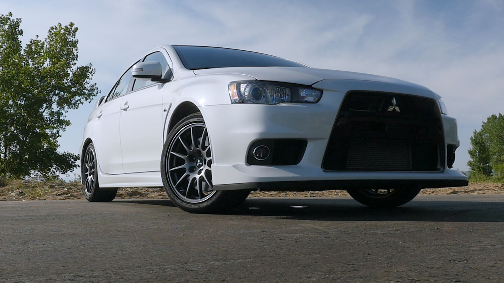
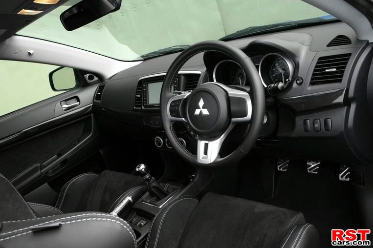

Mitsubishi Evolution X-Характеристики
Lancer Evolution унікальний серед своїх суперників по Чемпіонату світу з ралі, оскільки з сезону 1997 року аж до Ралі Сан-Ремо 2001 року він був омологірованним автомобілем Групи A, злегка модифікований для суперництва з автомобілями класу WRC. Він домагався успіху в ралі WRC в 1996-1999 роках завдяки фіну Томмі Мякінену, який ставав Чемпіоном світу серед пілотів в 1996-1999 роках, і його товаришеві по команді Річарду Бернсу, який допоміг у перший і поки єдиний раз стати Чемпіоном світу серед виробників в 1998 році. Незважаючи на це, наприкінці 2001 року Evolution був замінений першим заводським автомобілем WRC, названим просто Lancer Evolution WRC, який пілотували заводські гонщики Мякінен, Фредді Лойкс, Алістер МакРей і Франсуа Делекур, поки Mitsubishi не взяв річну відпустку в Чемпіонаті наприкінці 2002 року. Він був замінений на Ралі Монте-Карло 2004 року модель Lancer WRC04. Mitsubishi покинув Чемпіонат світу з ралі після сезону 2005 року з Lancer WRC05, пілотованим в наступні роки приватними гонщиками, включаючи колишнього заводського пілота італійця Джіджі Галлі і шведа Деніела Карлссона.
Тим не менш, Lancer Evolution досі бере участь в категорії Групи N. На деяких європейських ринках Evolution продавався під ім'ям Mitsubishi Carisma Evolution, тому наприкінці 1990-х другий автомобіль заводської команди WRC, пілотований в основному Бернсом і пізніше Лойксом, виступав як Carisma GT. Малайзійський Proton Motors використовував автомобілі Evolution III, Evolution V (найбільш відомий як Proton 1784, з яким малайзійський гонщик Карамжіт Сингх виграв в 2002 році Чемпіонат WRC серед серійних автомобілів) і Evolution VII як Proton Pert в різних раллійних серіях Азіати-Тихоокеанського Чемпіонату з ралі.

До бази седану входять: вікна та дзеркала з електроприводом, підігрів сидінь, клімат-контроль, функція відмикання дверей без ключа, передні сидіння Recaro, камера заднього виду, 7-дюймовий кольоровий сенсорний екран з AM/FM/CD/USB, функція підключення телефону через Bluetooth та елементи управління аудіо системою на рульовому колесі.
Динаміка розгону до 100 км/год становить 5,4 секунди, а максимальна швидкість - 240 км/год.
Стандартними елементами безпеки є: антиблокувальна гальмівна система, електронний розподіл гальмівного зусилля, функція допомоги при гальмуванні, протибуксувальна система, контроль стабільності та сім подушок безпеки
На деяких європейських ринках Evolution продавався під ім'ям Mitsubishi Carisma Evolution, тому наприкінці 1990-х другий автомобіль заводської команди WRC, пілотований в основному Бернсом і пізніше Лойксом, виступав як Carisma GT. Малайзійський Proton Motors використовував автомобілі Evolution III, Evolution V (найбільш відомий як Proton 1784, з яким малайзійський гонщик Карамжіт Сингх виграв в 2002 році Чемпіонат WRC серед серійних автомобілів) і Evolution VII як Proton Pert в різних раллійних серіях Азіати-Тихоокеанського Чемпіонату з ралі.